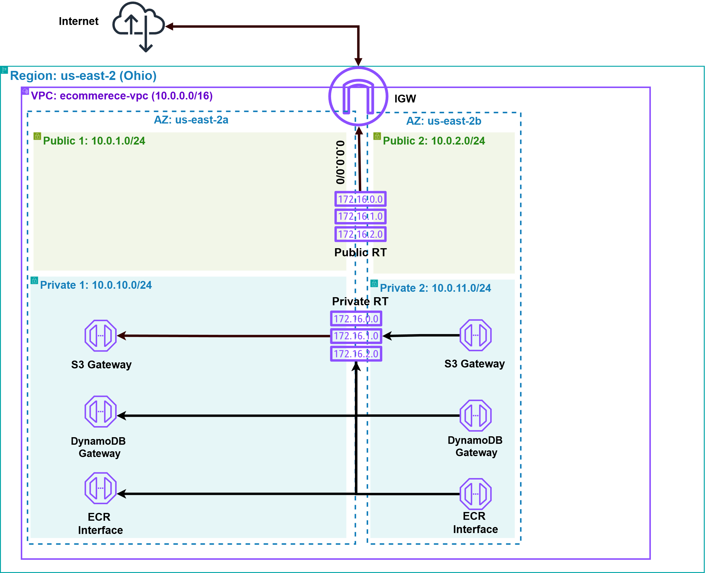
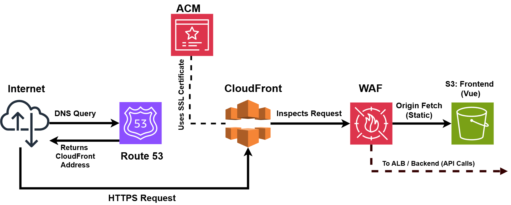
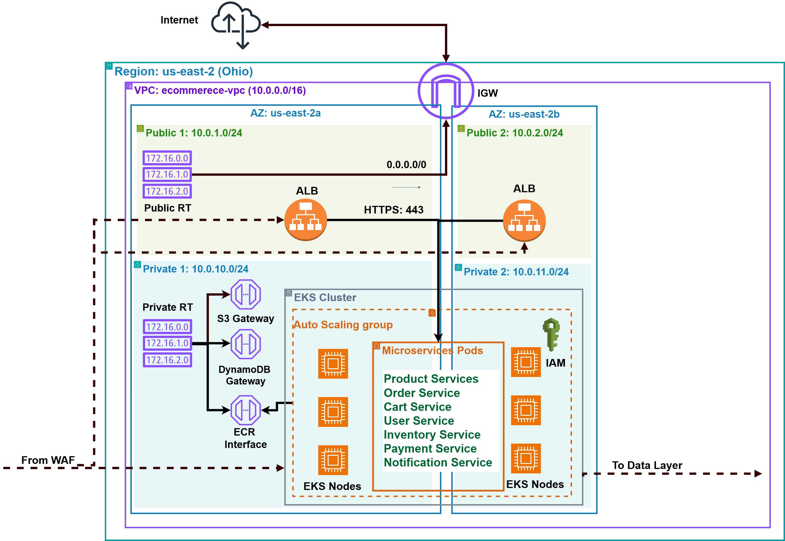
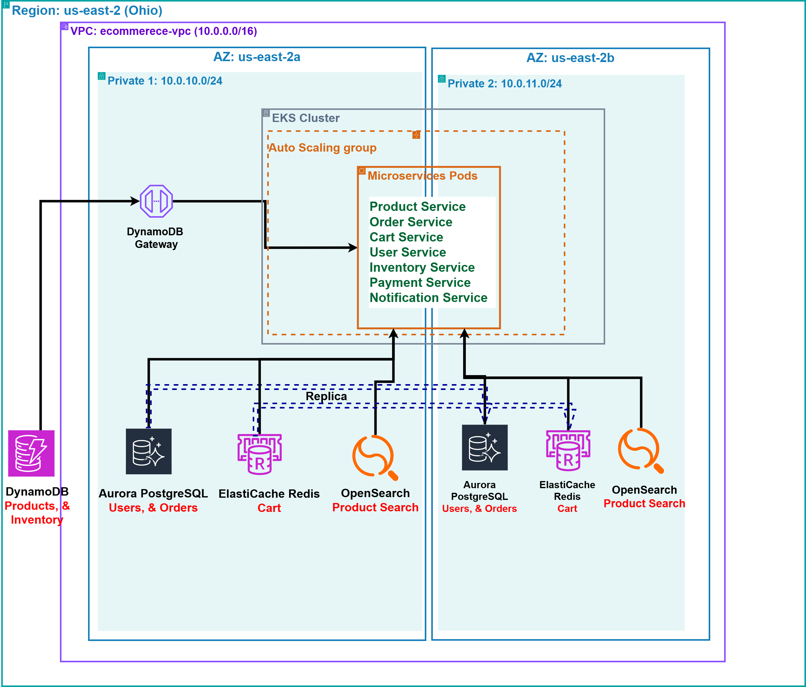

Building a Scalable E-Commerce Platform on AWS
My graduation project journey: designing and deploying a fully functional, multi-tier e-commerce website leveraging a suite of AWS services for scalability, security, and cost-efficiency.
Project Overview
As a graduating student, I engineered a high-availability, secure, and cost-optimized cloud infrastructure for an e-commerce platform on AWS, deployed across the us-east-2 (Ohio) region with availability zones us-east-2a and us-east-2b. This project demonstrates expertise in architecting a multi-tier system using AWS services to ensure operational resilience, scalability to handle peak loads, and cost efficiency through free-tier utilization. This page outlines the infrastructure design, deployment strategies, and technical components engineered to support a 24/7 business-critical environment.
Key Information
Core Technologies Utilized

")

")
")


")
Network Layer: VPC and Subnets

The foundation of the e-commerce platform is my custom Virtual Private Cloud (VPC) named ecommerce-vpc, configured with a CIDR block of 10.0.0.0/16. This VPC is meticulously organized across two availability zones (us-east-2a and us-east-2b) to ensure high availability and a secure network design.
- Public Subnets: These (
10.0.1.0/24in us-east-2a and10.0.2.0/24in us-east-2b) host the Application Load Balancer (ALB), serving as the entry point for public traffic. An Internet Gateway is attached to the VPC, enabling communication between resources in these public subnets and the internet. - Private Subnets: These (
10.0.10.0/24in us-east-2a and10.0.11.0/24in us-east-2b) house the core backend infrastructure, including Amazon EKS nodes, RDS database instances, ElastiCache for Redis, and OpenSearch clusters. - Connectivity & Cost Savings: Private route tables are configured to use VPC Endpoints for internal traffic between resources in the private subnets and other AWS services (like S3, DynamoDB, ECR). This approach enhances security by keeping traffic within the AWS network and offers a cost-saving advantage by avoiding the need for NAT gateways for these services.
Security Layer: Security Groups
Security was a top priority throughout this project. I meticulously crafted Security Groups (SGs) to act as virtual firewalls, controlling inbound and outbound traffic at the instance level for different components of the platform. The following table outlines the key security groups and their primary ingress rules:
| Security Group | Primary Purpose | Inbound Rules | Source |
|---|---|---|---|
| ALB SG | Application Load Balancer | HTTPS (TCP/443), HTTP (TCP/80) | 0.0.0.0/0 (Anywhere) |
| EKS Nodes SG | EKS Worker Nodes |
|
|
| Database SG | RDS, ElastiCache, OpenSearch |
|
EKS Nodes SG |
| VPC Endpoints SG | VPC Interface Endpoints | HTTPS (TCP/443) | EKS Nodes SG |
This table summarizes the main ingress rules. Outbound rules are generally permissive (allow all) within the VPC or restricted as needed.
Frontend Architecture: User Interface and Delivery

The frontend infrastructure is designed for global scalability and security, utilizing Amazon S3 as a highly durable storage solution for static assets and Amazon CloudFront as a distributed CDN to minimize latency and ensure content availability during traffic surges.
Amazon Route 53 provides reliable DNS resolution with failover support. Security is enforced through:
- An SSL/TLS certificate from AWS Certificate Manager (ACM) integrated with CloudFront, ensuring end-to-end encryption.
- AWS Web Application Firewall (WAF) configured with CloudFront to mitigate DDoS attacks and web exploits, maintaining a secure and resilient frontend capable of sustaining enterprise-level traffic.
Backend Architecture: The Engine of the Platform

The backend infrastructure is architected as a scalable and fault-tolerant microservices ecosystem, deployed on an Amazon Elastic Kubernetes Service (EKS) cluster within private VPC subnets to ensure network isolation and compliance with security standards.
The EKS node group leverages t3.medium instances for production-grade performance and auto-scaling, with t3.micro instances for cost-efficient testing. Containerization with Docker enables consistent deployment and zero-downtime updates, ensuring operational continuity under variable workloads.
Key Microservices
The platform's functionality is decomposed into the following key microservices, each responsible for a distinct domain:
Product Service
Engineered to maintain a highly available product catalog using Amazon DynamoDB, providing auto-scaling NoSQL storage to support peak transaction volumes and ensure data accessibility during high-demand periods.
Inventory Service
Engineered to monitor and manage real-time product inventory using Amazon DynamoDB, delivering a scalable NoSQL solution with auto-scaling capabilities to ensure accurate stock levels and uninterrupted service during high-demand periods.
Cart Service
Designed to handle temporary shopping cart data with Amazon ElastiCache for Redis, providing a high-performance, in-memory caching layer that ensures sub-millisecond response times and load balancing to maintain system stability during peak traffic.
Order Service
Architected to process and manage customer orders with Amazon Aurora PostgreSQL, offering a relational database with multi-AZ deployment and automated failover to guarantee transactional integrity and data availability under heavy workloads.
User/Auth Service
Built to manage user accounts and authentication, integrated with Amazon Aurora PostgreSQL for secure data storage and potentially Amazon Cognito for identity management, ensuring high availability and compliance with security standards for user data protection.
Payment Service
Engineered to integrate with external payment gateways like Stripe, providing a secure and fault-tolerant payment processing layer that supports high transaction volumes and ensures data encryption to safeguard sensitive financial information.
Notification Service
Designed to deliver reliable user notifications (e.g., order confirmations, shipping updates) using Amazon SNS and SQS, offering an asynchronous messaging system with scalability and fault tolerance to maintain communication integrity during peak usage.
Search Service
Architected to enhance product search and discovery with Amazon OpenSearch Service, delivering scalable indexing and fault-tolerant query performance to support real-time search operations and maintain responsiveness under heavy user loads.
To maintain secure and private communication within the AWS ecosystem, VPC Endpoints are configured for essential services such as S3, DynamoDB, and Amazon ECR (Elastic Container Registry), which hosts the Docker images for the microservices. This critical setup ensures that traffic between the EKS cluster and these AWS services does not traverse the public internet, adhering to security best practices.
Logging and monitoring were explored using Amazon CloudWatch, providing capabilities for tracking application performance, collecting metrics, and centralizing logs for operational insights and troubleshooting.
Database and Cache Tier: The Data Backbone

The data persistence infrastructure is engineered for high availability and performance, utilizing a diversified set of AWS database and caching services to ensure data integrity and low-latency access:
- Amazon DynamoDB: Deployed as a scalable NoSQL database for Product Catalog (
Product Service) and Inventory Service data (Inventory Service), offering auto-scaling and sub-millisecond latency to maintain service continuity during peak loads. - Amazon Aurora PostgreSQL: Configured for transactional data integrity (
User/Auth ServiceandOrder Service), with multi-AZ deployment and automated failover to guarantee data availability and recovery. - Amazon ElastiCache for Redis: Integrated as a high-performance caching layer for Cart Service (
Cart Service), reducing database load and ensuring rapid response times during high-concurrency events. - Amazon OpenSearch Service: Engineered for Search Service (
Search Service) to provide scalable indexing and fault-tolerant search capabilities, supporting real-time query performance under heavy usage.
Analytics Layer: A Bonus Exploration

The analytics infrastructure is designed as a scalable and resilient pipeline to enable data-driven decision-making and operational insights.
Key components include:
- Amazon S3 Data Lake: A durable, infinitely scalable storage solution for raw operational data, ensuring long-term data availability for analytics.
- AWS Glue: A managed ETL service that automates data transformation and schema discovery, supporting efficient processing for real-time analytics.
- Amazon Athena: A serverless query engine providing low-latency SQL access to S3 data, ensuring scalable analytics without infrastructure overhead.
- Amazon QuickSight: A high-availability BI service delivering real-time dashboards for monitoring sales and operational performance under varying loads.
- Amazon SageMaker: A robust ML platform engineered for scalable model deployment, enhancing predictive capabilities and system resilience.
CI/CD and Deployment: Automation Triumph
The infrastructure features a resilient and automated Continuous Integration and Continuous Deployment (CI/CD) pipeline to ensure rapid, secure, and error-free deployments.
This system enhances operational reliability through:
- GitHub: A centralized repository managing version control and triggering automated pipelines on code commits.
- AWS Elastic Container Registry (ECR): A secure, scalable registry for Docker images, ensuring consistent deployment across environments.
- GitHub Actions: An automated workflow engine that builds, tests, and deploys to Amazon EKS, minimizing downtime and ensuring deployment integrity.
- AWS Secrets Manager: A secure solution for managing and rotating credentials, enforcing encryption and access control to protect sensitive data.
- Custom IAM Roles and Policies: Granular permissions (e.g.,
EKSClusterRoleandEKSNodeRole) adhering to least privilege principles, ensuring secure resource access.
This automated pipeline significantly reduced manual intervention, minimized the risk of human error during deployments, and enabled faster iteration cycles, which was a personal triumph in applying DevOps best practices to a complex cloud application.
Global Infrastructure: Thinking Big
The infrastructure is deployed in us-east-2 (Ohio) with a multi-region design for high availability and disaster recovery, utilizing AWS’s global infrastructure.
Cross-region data replication and failover mechanisms ensure service continuity during regional outages, with us-east-1 (N. Virginia) planned as a secondary region. This architecture supports enterprise-grade resilience across Availability Zones and scales to meet global demand.
Project Conclusion and Key Learnings
This project exemplifies the engineering of a secure, scalable, and resilient e-commerce cloud infrastructure on AWS, optimized for cost efficiency and compliance with industry standards. The architecture, spanning S3/CloudFront frontend delivery, EKS-based microservices, and a robust database/cache tier, ensures continuous operation and adaptability to enterprise-scale demands.
Key insights include the critical role of automated CI/CD pipelines, stringent security measures, and AWS service integration for operational excellence. This hands-on expertise in Kubernetes orchestration, microservice scalability, and data persistence positions me as a strong candidate for cloud and DevOps roles.
"The advance of technology is based on making it fit in so that you don't really even notice it, so it's part of everyday life."